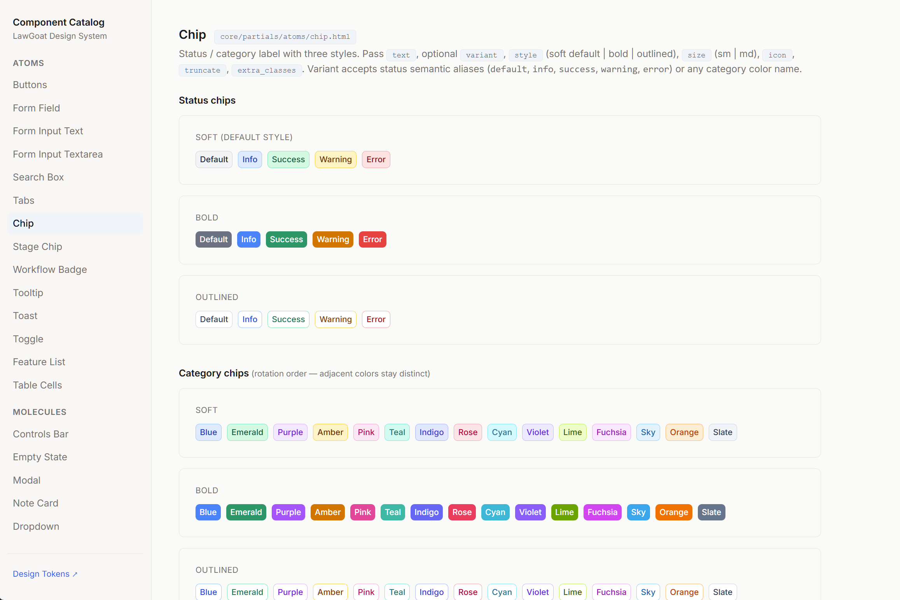
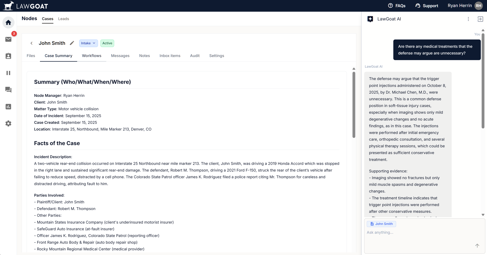
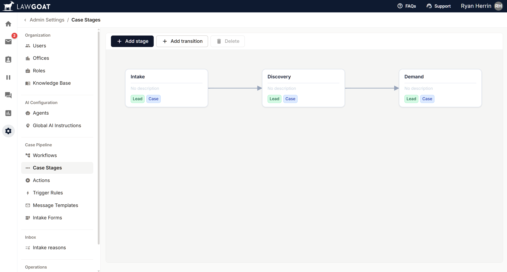

Building LawGoat — the design system, the AI surfaces, and the code — all from one chair.

LawGoat is Belva’s AI platform for law firms — one workspace where attorneys communicate with clients, analyze documents, and automate the repetitive parts of intake, scheduling, and case management.
I joined as the first product designer and built the design language, component library, and most of the production UI from zero. Three pieces of work below.
A component library, in production from week one.
Engineering was already shipping UI before I arrived. Every day without a system was another round of inconsistency to clean up later. So I built one in flight — modeling components in Figma, then translating them to HTMX + Tailwind using Claude inside Cursor on the same branch, same PR, same review.
Result: zero drift between design files and production code. The library covers buttons, inputs, tables, modals, toasts, and the LawGoat-specific patterns — case cards, AI message blocks, document viewers.

The fastest way to ship a design system is to be the one writing the code.
Designing trust into a conversational AI for attorneys.
Attorneys don’t trust black boxes. A generic chatbot would have been dismissed in the first demo. Every AI answer in LawGoat is grounded in the specific case — dates, providers, and documents pulled straight from the file — and every claim it makes is traceable back to a linked source document, not a vague summary.
The case summary view takes this further: a standing analysis that separates Risks from Opportunities in plain, color-coded blocks, so an attorney can scan a case’s exposure and leverage in seconds instead of re-reading the file.

A workflow flexible enough for every practice area.
Legal workflows are non-linear and vary wildly between practice areas. A rigid pipeline would have broken for half our users. The case-management surface is a configurable table with stages defined per practice area, drag-to-reorder columns and rows, and a document system that keeps every file — medical records, correspondence, evidence — tagged and searchable against the case it belongs to.
